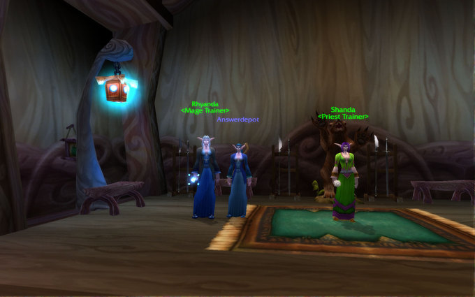

This is a runaround of World of Warcraft. The player rolls a new female gnome mage, plays a small part of the gnome starting content, and then takes a tour of Ironforge, Stormwind, and Darnassus, before finally ending up in Teldrassil. Along the way, various items are identified:
Indexing as indicated yields the clue phrase DOOMHAMMER PVE-US VISIT HERE. Thus the player should roll a character on the Doomhammer server and go to the endpoint of the runaround; this is easy to do because it’s in the night elf starting area. Precisely, the runaround ends next to the mage trainer.
During the hunt, we placed this character there on that server:

The answer is thus DEPOT.